{kind=link}

UT Zappos50K |
| Shoes | Sandals | Slippers | Boots |
| 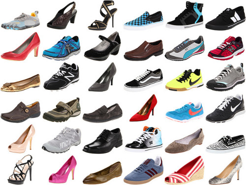 | |
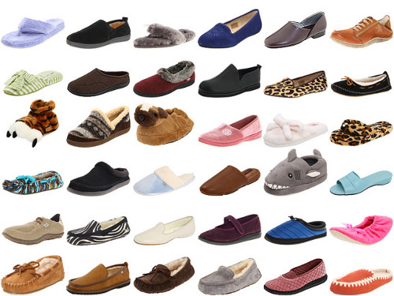 | 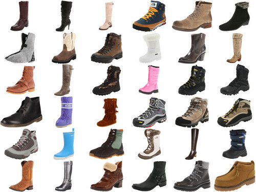 |
UT Zappos50K (UT-Zap50K) is a large shoe dataset consisting of 50,025 catalog images collected from Zappos.com. The images are divided into 4 major categories — shoes, sandals, slippers, and boots — followed by functional types and individual brands. The shoes are centered on a white background and pictured in the same orientation for convenient analysis.
This dataset is created in the context of an online shopping task, where users pay special attentions to fine-grained visual differences. For instance, it is more likely that a shopper is deciding between two pairs of similar men's running shoes instead of between a woman's high heel and a man's slipper. GIST and LAB color features are provided. In addition, each image has 8 associated meta-data (gender, materials, etc.) labels that are used to filter the shoes on Zappos.com.
We introduced this dataset in the context of a pairwise comparison task, where the goal is to predict which of two images more strongly exhibits a visual attribute. When given a novel image pair, we want to answer the question, “Does Image A contain more or less of an attribute than Image B?” Both training and evaluation are performed using pairwise labels.
However, the usefulness of this dataset extends beyond the comparison task that we’ve demonstrated. The meta-data labels and the large size of the dataset makes it suitable for other tasks as well, such as:
Using Mechanical Turk, we collected comparison labels for 4 relative attributes: open, pointy, sporty, and comfort. We sampled 3,000 pairs of images out of the possible 50K² pairs with strong bias towards intra-category and intra-gender images. We asked 5 workers to evaluate each pair for each attribute (more details). After pruning out pairs with low confidence or agreement, the human-annotated examples consist of 6,751 ordered pairs and 4,612 “equal” pairs. This is referred to as UT-Zap50K-1.
While the “equal” label can indicate that there’s no detectable difference in the attribute, we also suspected that it was an easy fallback response for cases that required a little more thought — that is, those showing fine-grained differences. Thus, we gave these “equal” pairs to a new set of workers, but without the “equal” option this time. We asked the workers to pick carefully and give a one sentence rationale. After pruning, there are 4,334 fine-grained pairs. This is referred to as UT-Zap50K-2.
Sample labels from both sets are shown below. 66% of Zap50K-1 and 63% of Zap50K-2 had at least 4 out of 5 workers agree on the same label with high confidence, ensuring consistency and reliability.
| Open | Pointy | Sporty | Comfort | |
| Ordered Pairs |
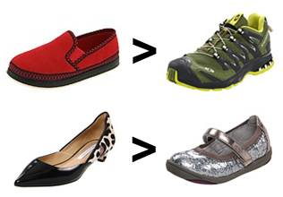 | 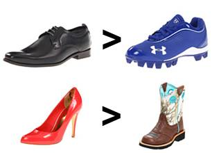 | 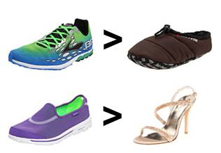 | 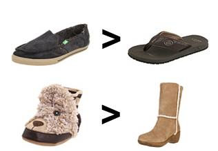 |
| Fine-Grained Pairs |
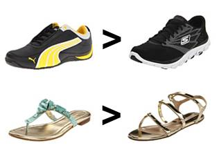 | 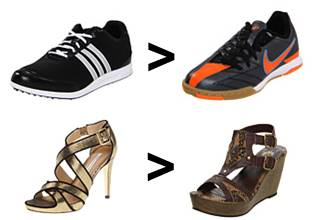 | 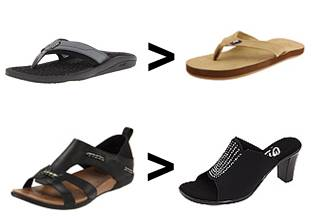 | 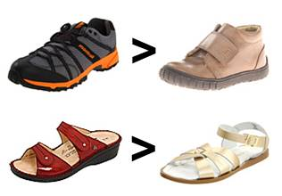 |
We provide the train-test splits used in our paper for benchmark purposes. We also provide a demo script to help with experimental setup for relative attribute prediction. The ROC curves of the current benchmarks for UT-Zap50K-1 are shown below. Numbers in the legends denote mean ranking accuracies (see paper for details).
| 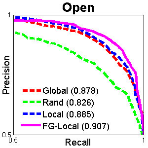 | 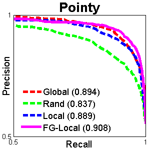 | 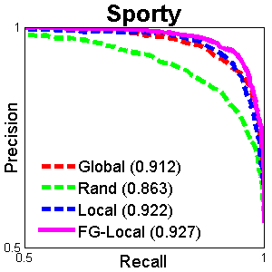 | 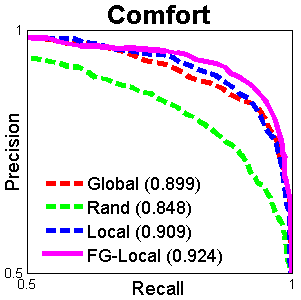 |
This dataset is for academic, non-commercial use only. If you use this dataset in a publication, please cite the following paper:
A. Yu and K. Grauman. "Fine-Grained Visual Comparisons with Local Learning". In CVPR, 2014.
[paper] [supp] [poster] [bibtex] [project page]
@InProceedings{fine-grained,
author = {A. Yu and K. Grauman},
title = {{F}ine-{G}rained {V}isual {C}omparisons with {L}ocal {L}earning},
booktitle = {Computer Vision and Pattern Recognition (CVPR)},
month = {June},
year = {2014}
}
Please consider providing your email address to be notified of any major changes to the dataset (updates, bug fixes, etc.):
You can download the dataset using the links below:
Version 1.0 (Apr 18th, 2014): Private release of the UT-Zap50K dataset webpage.
Version 1.1 (Apr 26th, 2014): Benchmark splits and demo script added.
{kind=link}
{kind=link}
{kind=link}
{kind=link}
{kind=link}
{kind=link}
{kind=link}
{kind=link}
{kind=link}
{kind=link}
{kind=link}
{kind=link}
{kind=link}
{kind=link}